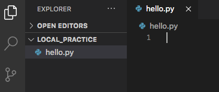

17.4. Python in VS Code¶
Now that we have installed all the tools we need, we are almost ready to write our first local Python program. We just need to run one last check.
Note
The steps on this page are ALMOST the same for both Windows and Mac. If the screenshots differ slightly from what you see, it’s because the images were taken on a different operating system than yours. However, the menus, steps, etc. are the same.
Mac users: Whenever we ask you to type the python command, you
should use python3 instead. macOS comes pre-installed with a 2.x version
of Python. This version runs if you use python. To make sure you’re
running the latest version, use python3.
17.4.1. Checking Python Version¶
Open VS Code and a terminal pane (if it isn’t already open). In the terminal,
type python -V (note the capital -V). You should see something similar
to:
Mac:
$ python3 -V
Python 3.8.3
Windows:
$ python -V
Python 3.8.3
This command prints out the version of Python installed on your machine. If your version differs slightly from what’s shown, that’s okay, as long as you have a 3.x version. If you see 2.x or an error message, go back through the Setting Up Python directions in the appendix.
17.4.2. First Local Program¶
Note
If you did not create the local_practice directory and hello.py file
described on the previous page, go back and do that
now.
If it’s not already open, launch Visual Studio Code.
From the File menu, select Open. Choose the
local_practicefolder. The file tree should update to look something like this:Double-click on
hello.pyfrom the file tree to open it in the editor.On line 1, type
print("Hello, Local World!").Save your changes by using File –> Save or a keyboard shortcut.
17.4.2.1. Linting¶
When you type in your first Python statement, VS Code may ask you to install a linter. This is a feature that provides some extra assistance while you code. For example, the linter flags syntax errors, undefined variables, etc.
Go ahead and click Install if you see this popup. If it works, great! If not, don’t worry about it. VS Code provides a basic level of linting by default.
{kind=link}
17.4.3. Running a Local Program¶
We have several options for running a program locally. Be sure to try out each one to see how they all work!
17.4.3.1. Terminal¶
To launch a Python program from the terminal, the general syntax is:
python filename.py
This works if we are in the directory that holds filename.py. If we are in
a different directory, then we can include a path to tell the computer where to
find our program (e.g. python /Users/username/directory_name/filename.py).
From the terminal, run hello.py. The output should look something like:
$ python hello.py
Hello, Local World!
Mac users: Remember to use python3 instead of python.
17.4.3.2. Right-Click¶
From the file tree, right-click on the file and choose Run Python File in Terminal.
{kind=link}
If all goes well, you’ll see Hello, Local World! appear in the terminal
pane.
17.4.4. Try It!¶
Tip
Be sure to save your work after you change your code! If you forget to do this, VS Code will run the last saved version of your program instead of the newer one.
Now that you’ve got the classic
Hello, Worldprogram under your belt, add a loop and a conditional to your program. Save your work, then runhello.pyagain to see the change.Create a new Python file in the
local_practicefolder. Be sure to include the.pyextension.Your new file should open into its own tab in VS Code. If it does not, click on its name in the file tree.
Log into repl.it or Trinket and find one of your favorite exercises, activities, or assignments. Copy your code from there and paste it into VS Code. Some nice options include:
- The Choose Your Own Adventure activity that your teacher may have assigned back in chapter 5.
- Your Candidate Quiz assignment.
- Anything from the Functions chapter project.
Note
Steer clear of turtle programs for now. They require a little extra attention to get them working in VS Code. We will take a closer look at Python turtles on the next page.
Check to see if VS Code flags any errors in your code. Fix these first, then run your program. If it works, great! If not, debug your code and get it running.
Practice renaming your program file. Right-click on its name in the file tree and choose Rename. Type in a new option and hit Enter. Be sure to keep the
.pyextension!
17.4.5. Naming Python Files¶
We learned the naming rules for Python files in the Modules chapter. Just as a reminder, here they are again.
Python file names should:
- Begin with a letter and contain only lowercase letters.
- Be as short as possible, but still descriptive.
- Separate words with an underscore
_. - End with the extension
.py.